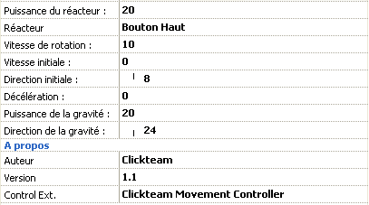

Ce mouvement simule le mouvement d'un vaisseau spatial pourvu d'un réacteur. L'objet bouge dans sa propre direction, et le réacteur, quand il est appliqué, change la direction et la vitesse du mouvement progressivement. Le mouvement gère également une gravité externe. Un tel mouvement est utilisé pour contrôler le vaisseau dans des jeux comme Asteroids ou Lunar Lander.
Après la sélection du mouvement, vous devez
définir la puissance du réacteur (de 0 à 100) et la gravité
(0 à 100) et sa direction. Tout le reste est géré automatiquement.
Notez que ce mouvement fonctionne mieux pour des objets contenant 32 directions
d'animation. L'animation MARCHE est appelée lorsque l'objet bouge à
l'écran, et l'animation SAUT est appelée lorsque le réacteur
est en marche.
Propriétés dans l'éditeur de scènes

Figure 1: propriétés du mouvement
Vaisseau Spatial.
Propriétés générales
Puissance du réacteur: indique la puissance
du réacteur, de 0 (pas de puissance) à 100 (puissance maximale).
Le réacteur est activé lorsque vous appuyez sur le bouton sélectionné.
Réacteur: choix du bouton à utiliser pour faire fonctionner
le réacteur.
Vitesse de rotation: indique la vitesse de rotation du vaisseau, lorsque
vous appuyez sur les touches gauche ou droite. De 0 (pas de rotation) à
100 (rapide).
Vitesse initiale: indique la vitesse initiale de l'objet, de 0 (arrété)
à 100 (rapide).
Direction initiale: vous permet de choisir la direction initiale de l'objet.
Si la vitesse initiale n'est pas nulle, l'objet bougera immédiatement
dans cette direction.
Décélération: indique un facteur de décélération
qui ralentit le vaisseau quand il bouge, de 0 à 100. Si 0, le vaisseau
de ralentit pas. Si 100, il stoppe immédiatement. Notez que la puissance
du réacteur doit être supérieure au facteur de décélération
pour que le réacteur fasse effet.
Puissance de la gravité: indique la force de la gravité,
de 0 à 100. 0 indique pas de gravité du tout. 100 est une gravité
vraiment forte. Notez que la puissance du réacteur doit être supérieure
à la puissance de la gravité pour que le vaisseau puisse contrebalancer
la gravité.
Direction de la gravité: vous permet de choisir la direction de
la gravité.